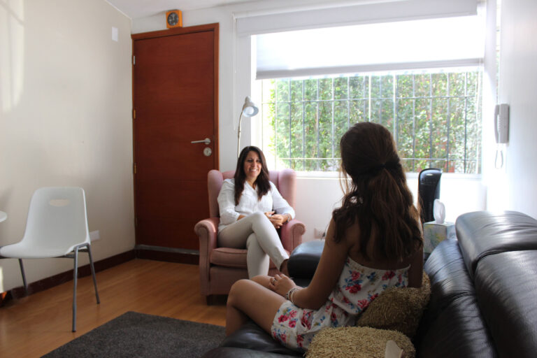

Niños
Psicoterapia desde los 3 años, con el juego, el dibujo y la expresión creativa como puentes para comprender su mundo emocional.
Conocer másServicios
Psicoterapia individual, manejo de ansiedad, depresión, ataques de pánico, evaluaciones psicológicas y consejería para padres en Sentir, Surco.
